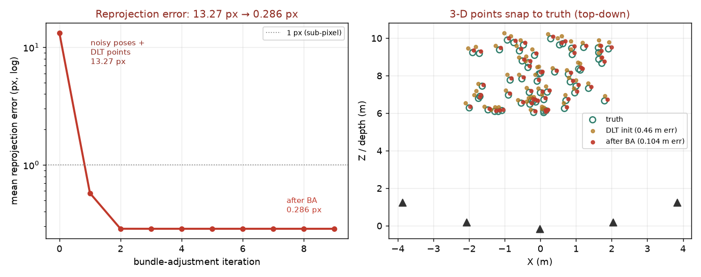

The single global step at the heart of every SfM pipeline and visual SLAM back-end — jointly refine every 3-D point and every camera pose to minimize total reprojection error.

A reconstruction front-end hands you noisy camera poses and per-view triangulated 3-D points, each carrying error. Bundle adjustment is the joint least-squares refinement that treats every 3-D point and every camera pose as unknowns and slides them all together to minimize the total reprojection error — the pixel gap between where each point lands in each image and where it was actually observed. We solve it with Levenberg-Marquardt on the stacked reprojection residuals, holding one camera fixed to anchor the 7-dof gauge (global rotation, translation, scale).